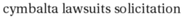
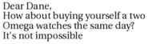
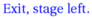
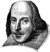
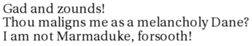
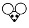
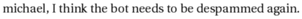

interpret_script.pl runs:
Script specification
panels 5 panel 1 font size=10 color=0,0,255 Proxybot appears mao says Hey, Fred font clear panel 2 font size=10 Proxybot says cymbalta lawsuits solicitation mao says ? panel 3 font size=09 Proxybot says Dear Dane,<br>How about buying yourself a two<br>Omega watches the same day?<br>It's not impossible font clear font size=10 color=0,0,255 mao says Exit, stage left. mao leaves font clear panel 5 font size=10 will appears will says Gad and zounds!<br>Thou maligns me as a melancholy Dane?<br>I am not Marmaduke, forsooth! font Bitstream Charter:style=Bold Italic font color=255,0,0 font clear will leaves Proxybot leaves panel 5 font size=9 mouse says michael, I think the bot needs to be despammed again. font clear font size=12 color=255,0,0 caption (lower right) NEXT: MORE SPAM!
Interpretation follows:
panels 5
Panel parameters and layout (currently ignored)
panel 1
Panel - (parameters currently ignored)
font size=10 color=0,0,255
Font size is now 10.
Font color is now 0,0,255.
Font is still default
Proxybot appears
Character Proxybot appears on scene
mao says Hey, Fred
Speech implies presence: speaker is "mao".
Speaker says: "Hey, Fred"
font clear
Font is now default.
panel 2
Panel - (parameters currently ignored)
font size=10
Font size is now 10.
Font is still default
Proxybot says cymbalta lawsuits solicitation
Speech implies presence: speaker is "Proxybot".
Speaker says: "cymbalta lawsuits solicitation"
mao says ?
Speech implies presence: speaker is "mao".
Speaker says: "?"
panel 3
Panel - (parameters currently ignored)
font size=09
Font size is now 09.
Font is still default
Proxybot says Dear Dane,
How about buying yourself a two
Omega watches the same day?
It's not impossible
Speech implies presence: speaker is "Proxybot".
Speaker says: "Dear Dane,
How about buying yourself a two
Omega watches the same day?
It's not impossible"
font clear
Font is now default.
font size=10 color=0,0,255
Font size is now 10.
Font color is now 0,0,255.
Font is still default
mao says Exit, stage left.
Speech implies presence: speaker is "mao".
Speaker says: "Exit, stage left."
mao leaves
Character mao leaves scene
font clear
Font is now default.
panel 5
Panel - (parameters currently ignored)
font size=10
Font size is now 10.
Font is still default
will appears
Character will appears on scene
will says Gad and zounds!
Thou maligns me as a melancholy Dane?
I am not Marmaduke, forsooth!
Character "will", already on panel, speaks!
Speaker says: "Gad and zounds!
Thou maligns me as a melancholy Dane?
I am not Marmaduke, forsooth! "
font Bitstream Charter:style=Bold Italic
Font is now Bitstream Charter:style=Bold Italic
font color=255,0,0
Font color is now 255,0,0.
Font is still Bitstream Charter:style=Bold Italic
font clear
Font is now default.
will leaves
Character will leaves scene
Proxybot leaves
Character Proxybot leaves scene
panel 5
Panel - (parameters currently ignored)
font size=9
Font size is now 9.
Font is still default
mouse says michael, I think the bot needs to be despammed again.
Speech implies presence: speaker is "mouse".
Speaker says: "michael, I think the bot needs to be despammed again."
font clear
Font is now default.
font size=12 color=255,0,0
Font size is now 12.
Font color is now 255,0,0.
Font is still default
caption (lower right) NEXT: MORE SPAM!
Caption with arguments lower right, saying "NEXT: MORE SPAM!".
I have no idea what this means.
Resulting XML definition:
<cartoon rowformat="1" width="700" panel-h="150" character-base-url="http://www.vivtek.com/toonbots/characters/"> <panel> <character name="Proxybot"/> <character name="mao"/> <dialog who="mao" font-size="10" font-color="0,0,255">Hey, Fred</dialog> </panel> <panel> <character name="Proxybot"/> <dialog who="Proxybot" font-size="10">cymbalta lawsuits solicitation</dialog> <character name="mao"/> <dialog who="mao" font-size="10">?</dialog> </panel> <panel> <character name="Proxybot"/> <dialog who="Proxybot" font-size="09">Dear Dane,<br/>How about buying yourself a two<br/>Omega watches the same day?<br/>It's not impossible</dialog> <character name="mao" action="leaves"/> <dialog who="mao" font-size="10" font-color="0,0,255">Exit, stage left.</dialog> </panel> <panel> <character name="will" action="leaves"/> <dialog who="will" font-size="10">Gad and zounds!<br/>Thou maligns me as a melancholy Dane?<br/>I am not Marmaduke, forsooth! </dialog> <character action="leaves" name="Proxybot"/> </panel> <panel> <character name="mouse"/> <dialog who="mouse" font-size="9">michael, I think the bot needs to be despammed again.</dialog> <caption font-size="12" font-color="255,0,0" location="lower right">NEXT: MORE SPAM!</caption> </panel> </cartoon>
instantiate.pl runs, but doesn't really do anything yet.
build_panel_make.pl runs.
Scene default:
<scene id="default" panels="1-2-3-4-5"> <frame tag="default-1" id="1" panels="1"> <character name="Proxybot" tag="default-1"/> <character name="mao" tag="default-1"/> </frame> <frame tag="default-2" id="2" panels="2"> <character name="Proxybot" tag="default-1"/> <character name="mao" tag="default-1"/> <character name="Proxybot" tag="default-2"/> <character name="mao" tag="default-2"/> </frame> <frame tag="default-3" id="3" panels="3"> <character name="Proxybot" tag="default-1"/> <character name="mao" tag="default-1"/> <character name="Proxybot" tag="default-2"/> <character name="mao" tag="default-2"/> <character name="Proxybot" tag="default-3"/> <character name="mao" action="leaves" tag="default-3"/> </frame> <frame tag="default-4" id="4" panels="4"> <character name="Proxybot" tag="default-1"/> <character name="Proxybot" tag="default-2"/> <character name="Proxybot" tag="default-3"/> <character name="will" action="leaves" tag="default-4"/> <character name="Proxybot" action="leaves" tag="default-4"/> </frame> <frame tag="default-5" id="5" panels="5"> <character name="mouse" tag="default-5"/> </frame> </scene>
Panel Makefile is as follows:
# Panel Makefile generated Wed Jan 21 15:21:16 PST 2009 by Toon-o-Matic t2 # Contains no serviceable parts. Batteries not included. # Void in NH, VT, and U.S. Minor Outlying Islands. all: panel-1.svg panel-2.svg panel-3.svg panel-4.svg panel-5.svg panel-1.svg: character-Proxybot-default-1-1.svg character-mao-default-1-1.svg dialog-1-1.svg perl build_panel_g.pl panel-1.xml 1 1 > panel-1-g.svg perl merge_svg.pl "panel 1" panel-1-g.svg character-Proxybot-default-1-1.svg character-mao-default-1-1.svg dialog-1-1.svg > panel-1.svg placement-panel-1.xml: draw-character-Proxybot-default-1.xml draw-character-mao-default-1.xml perl place_characters.pl "panel 1" 698 150 draw-character-Proxybot-default-1.xml draw-character-mao-default-1.xml > placement-panel-1.xml panel-2.svg: character-Proxybot-default-2-2.svg dialog-2-2.svg character-mao-default-2-2.svg dialog-2-3.svg perl build_panel_g.pl panel-2.xml 1 157 > panel-2-g.svg perl merge_svg.pl "panel 2" panel-2-g.svg character-Proxybot-default-2-2.svg dialog-2-2.svg character-mao-default-2-2.svg dialog-2-3.svg > panel-2.svg placement-panel-2.xml: draw-character-Proxybot-default-2.xml draw-character-mao-default-2.xml perl place_characters.pl "panel 2" 698 150 draw-character-Proxybot-default-2.xml draw-character-mao-default-2.xml > placement-panel-2.xml panel-3.svg: character-Proxybot-default-3-3.svg dialog-3-4.svg character-mao-default-3-3.svg dialog-3-5.svg perl build_panel_g.pl panel-3.xml 1 314 > panel-3-g.svg perl merge_svg.pl "panel 3" panel-3-g.svg character-Proxybot-default-3-3.svg dialog-3-4.svg character-mao-default-3-3.svg dialog-3-5.svg > panel-3.svg placement-panel-3.xml: draw-character-Proxybot-default-3.xml draw-character-mao-default-3.xml perl place_characters.pl "panel 3" 698 150 draw-character-Proxybot-default-3.xml draw-character-mao-default-3.xml > placement-panel-3.xml panel-4.svg: character-will-default-4-4.svg dialog-4-6.svg character-Proxybot-default-4-4.svg perl build_panel_g.pl panel-4.xml 1 471 > panel-4-g.svg perl merge_svg.pl "panel 4" panel-4-g.svg character-will-default-4-4.svg dialog-4-6.svg character-Proxybot-default-4-4.svg > panel-4.svg placement-panel-4.xml: draw-character-will-default-4.xml draw-character-Proxybot-default-4.xml perl place_characters.pl "panel 4" 698 150 draw-character-will-default-4.xml draw-character-Proxybot-default-4.xml > placement-panel-4.xml panel-5.svg: character-mouse-default-5-5.svg dialog-5-7.svg caption-5-1.svg perl build_panel_g.pl panel-5.xml 1 628 > panel-5-g.svg perl merge_svg.pl "panel 5" panel-5-g.svg character-mouse-default-5-5.svg dialog-5-7.svg caption-5-1.svg > panel-5.svg placement-panel-5.xml: draw-character-mouse-default-5.xml perl place_characters.pl "panel 5" 698 150 draw-character-mouse-default-5.xml > placement-panel-5.xml dialog-4-6.info: dialog-4-6.xml character-will-default-4-4.svg perl render_text.pl dialog-4-6.xml dialog-4-6.png identify -format '<graphic size="%b" height="%h" width="%w" geometry="%g" file="%f"/>' dialog-4-6.png > dialog-4-6.info dialog-4-6.svg: dialog-4-6.info perl draw_caption.pl dialog-4-6.xml dialog-4-6.info 698 150 0 dialog-4-6.png > dialog-4-6.svg draw-character-mao-default-3.xml: character-mao-default-3.xml perl build_character.pl this 698 150 character-mao-default-3.xml > draw-character-mao-default-3.xml character-mao-default-3-3.svg: draw-character-mao-default-3.xml placement-panel-3.xml perl draw.pl draw-character-mao-default-3.xml 698 150 placement-panel-3.xml > character-mao-default-3-3.svg dialog-1-1.info: dialog-1-1.xml character-mao-default-1-1.svg perl render_text.pl dialog-1-1.xml dialog-1-1.png identify -format '<graphic size="%b" height="%h" width="%w" geometry="%g" file="%f"/>' dialog-1-1.png > dialog-1-1.info dialog-1-1.svg: dialog-1-1.info perl draw_caption.pl dialog-1-1.xml dialog-1-1.info 698 150 0 dialog-1-1.png > dialog-1-1.svg dialog-3-5.info: dialog-3-5.xml character-mao-default-3-3.svg perl render_text.pl dialog-3-5.xml dialog-3-5.png identify -format '<graphic size="%b" height="%h" width="%w" geometry="%g" file="%f"/>' dialog-3-5.png > dialog-3-5.info dialog-3-5.svg: dialog-3-5.info perl draw_caption.pl dialog-3-5.xml dialog-3-5.info 698 150 0 dialog-3-5.png > dialog-3-5.svg draw-character-Proxybot-default-1.xml: character-Proxybot-default-1.xml perl build_character.pl this 698 150 character-Proxybot-default-1.xml > draw-character-Proxybot-default-1.xml character-Proxybot-default-1-1.svg: draw-character-Proxybot-default-1.xml placement-panel-1.xml perl draw.pl draw-character-Proxybot-default-1.xml 698 150 placement-panel-1.xml > character-Proxybot-default-1-1.svg draw-character-Proxybot-default-4.xml: character-Proxybot-default-4.xml perl build_character.pl this 698 150 character-Proxybot-default-4.xml > draw-character-Proxybot-default-4.xml character-Proxybot-default-4-4.svg: draw-character-Proxybot-default-4.xml placement-panel-4.xml perl draw.pl draw-character-Proxybot-default-4.xml 698 150 placement-panel-4.xml > character-Proxybot-default-4-4.svg dialog-2-3.info: dialog-2-3.xml character-mao-default-2-2.svg perl render_text.pl dialog-2-3.xml dialog-2-3.png identify -format '<graphic size="%b" height="%h" width="%w" geometry="%g" file="%f"/>' dialog-2-3.png > dialog-2-3.info dialog-2-3.svg: dialog-2-3.info perl draw_caption.pl dialog-2-3.xml dialog-2-3.info 698 150 0 dialog-2-3.png > dialog-2-3.svg draw-character-mao-default-2.xml: character-mao-default-2.xml perl build_character.pl this 698 150 character-mao-default-2.xml > draw-character-mao-default-2.xml character-mao-default-2-2.svg: draw-character-mao-default-2.xml placement-panel-2.xml perl draw.pl draw-character-mao-default-2.xml 698 150 placement-panel-2.xml > character-mao-default-2-2.svg draw-character-mao-default-1.xml: character-mao-default-1.xml perl build_character.pl this 698 150 character-mao-default-1.xml > draw-character-mao-default-1.xml character-mao-default-1-1.svg: draw-character-mao-default-1.xml placement-panel-1.xml perl draw.pl draw-character-mao-default-1.xml 698 150 placement-panel-1.xml > character-mao-default-1-1.svg draw-character-Proxybot-default-3.xml: character-Proxybot-default-3.xml perl build_character.pl this 698 150 character-Proxybot-default-3.xml > draw-character-Proxybot-default-3.xml character-Proxybot-default-3-3.svg: draw-character-Proxybot-default-3.xml placement-panel-3.xml perl draw.pl draw-character-Proxybot-default-3.xml 698 150 placement-panel-3.xml > character-Proxybot-default-3-3.svg draw-character-Proxybot-default-2.xml: character-Proxybot-default-2.xml perl build_character.pl this 698 150 character-Proxybot-default-2.xml > draw-character-Proxybot-default-2.xml character-Proxybot-default-2-2.svg: draw-character-Proxybot-default-2.xml placement-panel-2.xml perl draw.pl draw-character-Proxybot-default-2.xml 698 150 placement-panel-2.xml > character-Proxybot-default-2-2.svg dialog-3-4.info: dialog-3-4.xml character-Proxybot-default-3-3.svg perl render_text.pl dialog-3-4.xml dialog-3-4.png identify -format '<graphic size="%b" height="%h" width="%w" geometry="%g" file="%f"/>' dialog-3-4.png > dialog-3-4.info dialog-3-4.svg: dialog-3-4.info perl draw_caption.pl dialog-3-4.xml dialog-3-4.info 698 150 0 dialog-3-4.png > dialog-3-4.svg draw-character-will-default-4.xml: character-will-default-4.xml perl build_character.pl this 698 150 character-will-default-4.xml > draw-character-will-default-4.xml character-will-default-4-4.svg: draw-character-will-default-4.xml placement-panel-4.xml perl draw.pl draw-character-will-default-4.xml 698 150 placement-panel-4.xml > character-will-default-4-4.svg caption-5-1.info: caption-5-1.xml perl render_text.pl caption-5-1.xml caption-5-1.png identify -format '<graphic size="%b" height="%h" width="%w" geometry="%g" file="%f"/>' caption-5-1.png > caption-5-1.info caption-5-1.svg: caption-5-1.info perl draw_caption.pl caption-5-1.xml caption-5-1.info 698 150 0 caption-5-1.png > caption-5-1.svg dialog-2-2.info: dialog-2-2.xml character-Proxybot-default-2-2.svg perl render_text.pl dialog-2-2.xml dialog-2-2.png identify -format '<graphic size="%b" height="%h" width="%w" geometry="%g" file="%f"/>' dialog-2-2.png > dialog-2-2.info dialog-2-2.svg: dialog-2-2.info perl draw_caption.pl dialog-2-2.xml dialog-2-2.info 698 150 0 dialog-2-2.png > dialog-2-2.svg draw-character-mouse-default-5.xml: character-mouse-default-5.xml perl build_character.pl this 698 150 character-mouse-default-5.xml > draw-character-mouse-default-5.xml character-mouse-default-5-5.svg: draw-character-mouse-default-5.xml placement-panel-5.xml perl draw.pl draw-character-mouse-default-5.xml 698 150 placement-panel-5.xml > character-mouse-default-5-5.svg dialog-5-7.info: dialog-5-7.xml character-mouse-default-5-5.svg perl render_text.pl dialog-5-7.xml dialog-5-7.png identify -format '<graphic size="%b" height="%h" width="%w" geometry="%g" file="%f"/>' dialog-5-7.png > dialog-5-7.info dialog-5-7.svg: dialog-5-7.info perl draw_caption.pl dialog-5-7.xml dialog-5-7.info 698 150 0 dialog-5-7.png > dialog-5-7.svgbuild_character.pl runs on character-Proxybot-default-1.xml:
<character name="Proxybot" tag="default-1"/>Retrieving character definition for Proxybot; URL is http://www.vivtek.com/toonbots/characters/Proxybot.xml
Retrieval fails, unfortunately. We'll go with the default character.
Final character definition:
<rect rel-w="75" show-box="yes" rel-h="50"/>
Built character:
<character name="Proxybot" tag="default-1" rel-h="50" rel-w="75" show-box="yes" height="75" width="56.25"/>
build_character.pl runs on character-mao-default-1.xml:
<character name="mao" tag="default-1"/>Retrieving character definition for mao; URL is http://www.vivtek.com/toonbots/characters/mao.xml
Retrieving image from http://www.vivtek.com/toonbots/characters/mao.bmp
Final character definition:
<character name="mao" label="Chairman Mao" rel-h="50"> <draw face="left" file="image-mao-1.bmp" type="image"/> </character>
Built character:
<character name="mao" tag="default-1" rel-h="50" rel-w="" height="75" width="66.2068965517241"> <draw face="left" file="image-mao-1.bmp" type="image" rel-h="100" rel-w="100" height="75" rel-x="0" rel-y="0" w="128" h="145" width="66.2068965517241"/> </character>
place_characters.pl places characters for panel 1:
<placement> <character name="Proxybot" x="204.541666666667" y="52.5"/> <character name="mao" x="432.229885057471" y="52.5"/> </placement>
draw.pl runs on draw-character-Proxybot-default-1.xml:
SVG built:
<g x="204.541666666667" y="52.5" w="56.25" h="75"> <rect x="204.541666666667" y="52.5" width="56.25" height="75" style="stroke:black; stroke-width:1; fill:none"/> </g>
draw.pl runs on draw-character-mao-default-1.xml:
SVG built:
<g x="432.229885057471" y="52.5" w="66.2068965517241" h="75"> <image x="432.229885057471" y="52.5" width="66.2068965517241" height="75" xlink:href="image-mao-1.bmp"/> </g>
render_text.pl renders "dialog-1-1.xml":
<dialog who="mao" ref-who="character-mao-default-1-1.svg" font-color="0,0,255" font-size="10">Hey, Fred</dialog>
draw_caption.pl runs:
Graphics info:
<graphic width="64" file="dialog-1-1.png" geometry="2500x320+12+2" height="19" size="3392"/>
<g> <polyline style="stroke:black; stroke-width:1; fill:white" points="498.436781609195,29.5 582.436781609195,29.5 582.436781609195,52.5 550.436781609195,52.5 503.436781609195,90 530.436781609195,52.5 498.436781609195,52.5 498.436781609195,29.5"/> <image x="10" y="2" width="64" height="19" xlink:href="dialog-1-1.png" transform="translate(498.436781609195,29.5)"/> </g>
build_panel_g.pl runs, producing:
<g transform="translate(1,1)"/>
merge_svg.pl runs to produce panel 1:
<g transform="translate(1,1)"><g w="56.25" y="52.5" h="75" x="204.541666666667"> <rect width="56.25" y="52.5" style="stroke:black; stroke-width:1; fill:none" x="204.541666666667" height="75"/> </g> <g w="66.2068965517241" y="52.5" h="75" x="432.229885057471"> <image width="66.2068965517241" y="52.5" xlink:href="image-mao-1.bmp" x="432.229885057471" height="75"/> </g> <g> <polyline points="498.436781609195,29.5 582.436781609195,29.5 582.436781609195,52.5 550.436781609195,52.5 503.436781609195,90 530.436781609195,52.5 498.436781609195,52.5 498.436781609195,29.5" style="stroke:black; stroke-width:1; fill:white"/> <image width="64" y="2" transform="translate(498.436781609195,29.5)" xlink:href="dialog-1-1.png" x="10" height="19"/> </g> </g>
build_character.pl runs on character-Proxybot-default-2.xml:
<character name="Proxybot" tag="default-2"/>
Built character:
<character name="Proxybot" tag="default-2" rel-h="50" rel-w="75" show-box="yes" height="75" width="56.25"/>
build_character.pl runs on character-mao-default-2.xml:
<character name="mao" tag="default-2"/>
Built character:
<character name="mao" tag="default-2" rel-h="50" rel-w="" height="75" width="66.2068965517241"> <draw face="left" file="image-mao-1.bmp" type="image" rel-h="100" rel-w="100" height="75" rel-x="0" rel-y="0" w="128" h="145" width="66.2068965517241"/> </character>
place_characters.pl places characters for panel 2:
<placement> <character name="Proxybot" x="204.541666666667" y="52.5"/> <character name="mao" x="432.229885057471" y="52.5"/> </placement>
draw.pl runs on draw-character-Proxybot-default-2.xml:
SVG built:
<g x="204.541666666667" y="52.5" w="56.25" h="75"> <rect x="204.541666666667" y="52.5" width="56.25" height="75" style="stroke:black; stroke-width:1; fill:none"/> </g>
render_text.pl renders "dialog-2-2.xml":
<dialog who="Proxybot" ref-who="character-Proxybot-default-2-2.svg" font-size="10">cymbalta lawsuits solicitation</dialog>
draw_caption.pl runs:
Graphics info:
<graphic width="184" file="dialog-2-2.png" geometry="2500x320+12+2" height="19" size="10510"/>
<g> <polyline style="stroke:black; stroke-width:1; fill:white" points="260.791666666667,29.5 464.791666666667,29.5 464.791666666667,52.5 372.791666666667,52.5 265.791666666667,90 352.791666666667,52.5 260.791666666667,52.5 260.791666666667,29.5"/> <image x="10" y="2" width="184" height="19" xlink:href="dialog-2-2.png" transform="translate(260.791666666667,29.5)"/> </g>
draw.pl runs on draw-character-mao-default-2.xml:
SVG built:
<g x="432.229885057471" y="52.5" w="66.2068965517241" h="75"> <image x="432.229885057471" y="52.5" width="66.2068965517241" height="75" xlink:href="image-mao-1.bmp"/> </g>
render_text.pl renders "dialog-2-3.xml":
<dialog who="mao" ref-who="character-mao-default-2-2.svg" font-size="10">?</dialog>
draw_caption.pl runs:
Graphics info:
<graphic width="11" file="dialog-2-3.png" geometry="2500x320+12+3" height="15" size="845"/>
<g> <polyline style="stroke:black; stroke-width:1; fill:white" points="498.436781609195,33.5 529.436781609195,33.5 529.436781609195,52.5 523.936781609195,52.5 503.436781609195,90 503.936781609195,52.5 498.436781609195,52.5 498.436781609195,33.5"/> <image x="10" y="2" width="11" height="15" xlink:href="dialog-2-3.png" transform="translate(498.436781609195,33.5)"/> </g>
build_panel_g.pl runs, producing:
<g transform="translate(1,157)"/>
merge_svg.pl runs to produce panel 2:
<g transform="translate(1,157)"><g w="56.25" y="52.5" h="75" x="204.541666666667"> <rect width="56.25" y="52.5" style="stroke:black; stroke-width:1; fill:none" x="204.541666666667" height="75"/> </g> <g> <polyline points="260.791666666667,29.5 464.791666666667,29.5 464.791666666667,52.5 372.791666666667,52.5 265.791666666667,90 352.791666666667,52.5 260.791666666667,52.5 260.791666666667,29.5" style="stroke:black; stroke-width:1; fill:white"/> <image width="184" y="2" transform="translate(260.791666666667,29.5)" xlink:href="dialog-2-2.png" x="10" height="19"/> </g> <g w="66.2068965517241" y="52.5" h="75" x="432.229885057471"> <image width="66.2068965517241" y="52.5" xlink:href="image-mao-1.bmp" x="432.229885057471" height="75"/> </g> <g> <polyline points="498.436781609195,33.5 529.436781609195,33.5 529.436781609195,52.5 523.936781609195,52.5 503.436781609195,90 503.936781609195,52.5 498.436781609195,52.5 498.436781609195,33.5" style="stroke:black; stroke-width:1; fill:white"/> <image width="11" y="2" transform="translate(498.436781609195,33.5)" xlink:href="dialog-2-3.png" x="10" height="15"/> </g> </g>
build_character.pl runs on character-Proxybot-default-3.xml:
<character name="Proxybot" tag="default-3"/>
Built character:
<character name="Proxybot" tag="default-3" rel-h="50" rel-w="75" show-box="yes" height="75" width="56.25"/>
build_character.pl runs on character-mao-default-3.xml:
<character action="leaves" name="mao" tag="default-3"/>
Built character:
<character action="leaves" name="mao" tag="default-3" rel-h="50" rel-w="" height="75" width="66.2068965517241"> <draw face="left" file="image-mao-1.bmp" type="image" rel-h="100" rel-w="100" height="75" rel-x="0" rel-y="0" w="128" h="145" width="66.2068965517241"/> </character>
place_characters.pl places characters for panel 3:
<placement> <character name="Proxybot" x="204.541666666667" y="52.5"/> <character name="mao" x="432.229885057471" y="52.5"/> </placement>
draw.pl runs on draw-character-Proxybot-default-3.xml:
SVG built:
<g x="204.541666666667" y="52.5" w="56.25" h="75"> <rect x="204.541666666667" y="52.5" width="56.25" height="75" style="stroke:black; stroke-width:1; fill:none"/> </g>
render_text.pl renders "dialog-3-4.xml":
<dialog who="Proxybot" ref-who="character-Proxybot-default-3-3.svg" font-size="09">Dear Dane,<br/>How about buying yourself a two<br/>Omega watches the same day?<br/>It's not impossible</dialog>
draw_caption.pl runs:
Graphics info:
<graphic width="185" file="dialog-3-4.png" geometry="2500x320+10+2" height="55" size="27504"/>
<g> <polyline style="stroke:black; stroke-width:1; fill:white" points="260.791666666667,-6.5 465.791666666667,-6.5 465.791666666667,52.5 373.291666666667,52.5 265.791666666667,90 353.291666666667,52.5 260.791666666667,52.5 260.791666666667,-6.5"/> <image x="10" y="2" width="185" height="55" xlink:href="dialog-3-4.png" transform="translate(260.791666666667,-6.5)"/> </g>
draw.pl runs on draw-character-mao-default-3.xml:
SVG built:
<g x="432.229885057471" y="52.5" w="66.2068965517241" h="75"> <image x="432.229885057471" y="52.5" width="66.2068965517241" height="75" xlink:href="image-mao-1.bmp"/> </g>
render_text.pl renders "dialog-3-5.xml":
<dialog who="mao" ref-who="character-mao-default-3-3.svg" font-color="0,0,255" font-size="10">Exit, stage left.</dialog>
draw_caption.pl runs:
Graphics info:
<graphic width="92" file="dialog-3-5.png" geometry="2500x320+12+2" height="19" size="4914"/>
<g> <polyline style="stroke:black; stroke-width:1; fill:white" points="498.436781609195,29.5 610.436781609195,29.5 610.436781609195,52.5 564.436781609195,52.5 503.436781609195,90 544.436781609195,52.5 498.436781609195,52.5 498.436781609195,29.5"/> <image x="10" y="2" width="92" height="19" xlink:href="dialog-3-5.png" transform="translate(498.436781609195,29.5)"/> </g>
build_panel_g.pl runs, producing:
<g transform="translate(1,314)"/>
merge_svg.pl runs to produce panel 3:
<g transform="translate(1,314)"><g w="56.25" y="52.5" h="75" x="204.541666666667"> <rect width="56.25" y="52.5" style="stroke:black; stroke-width:1; fill:none" x="204.541666666667" height="75"/> </g> <g> <polyline points="260.791666666667,-6.5 465.791666666667,-6.5 465.791666666667,52.5 373.291666666667,52.5 265.791666666667,90 353.291666666667,52.5 260.791666666667,52.5 260.791666666667,-6.5" style="stroke:black; stroke-width:1; fill:white"/> <image width="185" y="2" transform="translate(260.791666666667,-6.5)" xlink:href="dialog-3-4.png" x="10" height="55"/> </g> <g w="66.2068965517241" y="52.5" h="75" x="432.229885057471"> <image width="66.2068965517241" y="52.5" xlink:href="image-mao-1.bmp" x="432.229885057471" height="75"/> </g> <g> <polyline points="498.436781609195,29.5 610.436781609195,29.5 610.436781609195,52.5 564.436781609195,52.5 503.436781609195,90 544.436781609195,52.5 498.436781609195,52.5 498.436781609195,29.5" style="stroke:black; stroke-width:1; fill:white"/> <image width="92" y="2" transform="translate(498.436781609195,29.5)" xlink:href="dialog-3-5.png" x="10" height="19"/> </g> </g>
build_character.pl runs on character-will-default-4.xml:
<character action="leaves" name="will" tag="default-4"/>Retrieving character definition for will; URL is http://www.vivtek.com/toonbots/characters/will.xml
Retrieving image from http://www.vivtek.com/toonbots/characters/shakespeare.bmp

Final character definition:
<character name="will" label="Shakespeare" rel-h="50"> <draw face="left" file="image-will-1.bmp" type="image"/> </character>
Built character:
<character action="leaves" name="will" tag="default-4" rel-h="50" rel-w="" height="75" width="72.3913043478261"> <draw face="left" file="image-will-1.bmp" type="image" rel-h="100" rel-w="100" height="75" rel-x="0" rel-y="0" w="111" h="115" width="72.3913043478261"/> </character>
build_character.pl runs on character-Proxybot-default-4.xml:
<character action="leaves" name="Proxybot" tag="default-4"/>
Built character:
<character action="leaves" name="Proxybot" tag="default-4" rel-h="50" rel-w="75" show-box="yes" height="75" width="56.25"/>
place_characters.pl places characters for panel 4:
<placement> <character name="will" x="196.471014492754" y="52.5"/> <character name="Proxybot" x="437.208333333333" y="52.5"/> </placement>
draw.pl runs on draw-character-will-default-4.xml:
SVG built:
<g x="196.471014492754" y="52.5" w="72.3913043478261" h="75"> <image x="196.471014492754" y="52.5" width="72.3913043478261" height="75" xlink:href="image-will-1.bmp"/> </g>
render_text.pl renders "dialog-4-6.xml":
<dialog who="will" ref-who="character-will-default-4-4.svg" font-size="10">Gad and zounds!<br/>Thou maligns me as a melancholy Dane?<br/>I am not Marmaduke, forsooth! </dialog>
draw_caption.pl runs:
Graphics info:
<graphic width="252" file="dialog-4-6.png" geometry="2500x320+12+2" height="46" size="26781"/>
<g> <polyline style="stroke:black; stroke-width:1; fill:white" points="268.86231884058,2.5 540.86231884058,2.5 540.86231884058,52.5 414.86231884058,52.5 273.86231884058,90 394.86231884058,52.5 268.86231884058,52.5 268.86231884058,2.5"/> <image x="10" y="2" width="252" height="46" xlink:href="dialog-4-6.png" transform="translate(268.86231884058,2.5)"/> </g>
draw.pl runs on draw-character-Proxybot-default-4.xml:
SVG built:
<g x="437.208333333333" y="52.5" w="56.25" h="75"> <rect x="437.208333333333" y="52.5" width="56.25" height="75" style="stroke:black; stroke-width:1; fill:none"/> </g>
build_panel_g.pl runs, producing:
<g transform="translate(1,471)"/>
merge_svg.pl runs to produce panel 4:
<g transform="translate(1,471)"><g w="72.3913043478261" y="52.5" h="75" x="196.471014492754"> <image width="72.3913043478261" y="52.5" xlink:href="image-will-1.bmp" x="196.471014492754" height="75"/> </g> <g> <polyline points="268.86231884058,2.5 540.86231884058,2.5 540.86231884058,52.5 414.86231884058,52.5 273.86231884058,90 394.86231884058,52.5 268.86231884058,52.5 268.86231884058,2.5" style="stroke:black; stroke-width:1; fill:white"/> <image width="252" y="2" transform="translate(268.86231884058,2.5)" xlink:href="dialog-4-6.png" x="10" height="46"/> </g> <g w="56.25" y="52.5" h="75" x="437.208333333333"> <rect width="56.25" y="52.5" style="stroke:black; stroke-width:1; fill:none" x="437.208333333333" height="75"/> </g> </g>
build_character.pl runs on character-mouse-default-5.xml:
<character name="mouse" tag="default-5"/>Retrieving character definition for mouse; URL is http://www.vivtek.com/toonbots/characters/mouse.xml
Retrieving image from http://www.vivtek.com/toonbots/characters/mouse.bmp

Final character definition:
<character name="mouse" label="mouse" rel-h="40"> <draw file="image-mouse-1.bmp" type="image"/> </character>
Built character:
<character name="mouse" tag="default-5" rel-h="40" rel-w="" height="60" width="64.3137254901961"> <draw file="image-mouse-1.bmp" type="image" rel-h="100" rel-w="100" height="60" rel-x="0" rel-y="0" w="164" h="153" width="64.3137254901961"/> </character>
place_characters.pl places characters for panel 5:
<placement> <character name="mouse" x="316.843137254902" y="60"/> </placement>
draw.pl runs on draw-character-mouse-default-5.xml:
SVG built:
<g x="316.843137254902" y="60" w="64.3137254901961" h="60"> <image x="316.843137254902" y="60" width="64.3137254901961" height="60" xlink:href="image-mouse-1.bmp"/> </g>
render_text.pl renders "dialog-5-7.xml":
<dialog who="mouse" ref-who="character-mouse-default-5-5.svg" font-size="9">michael, I think the bot needs to be despammed again.</dialog>
draw_caption.pl runs:
Graphics info:
<graphic width="302" file="dialog-5-7.png" geometry="2500x320+11+1" height="19" size="15276"/>
<g> <polyline style="stroke:black; stroke-width:1; fill:white" points="381.156862745098,37 703.156862745098,37 703.156862745098,60 552.156862745098,60 386.156862745098,90 532.156862745098,60 381.156862745098,60 381.156862745098,37"/> <image x="10" y="2" width="302" height="19" xlink:href="dialog-5-7.png" transform="translate(381.156862745098,37)"/> </g>
render_text.pl renders "caption-5-1.xml":
<caption location="lower right" font-color="255,0,0" font-size="12">NEXT: MORE SPAM!</caption>
draw_caption.pl runs:
Graphics info:
<graphic width="153" file="caption-5-1.png" geometry="2500x320+15+3" height="18" size="8429"/>
<g transform="translate(525,128)" x="525" y="128" w="173" h="22"> <rect x="0" y="0" width="173" height="22" style="stroke:black; stroke-width:1; fill:white"/> <image x="10" y="2" width="153" height="18" xlink:href="caption-5-1.png"/> </g>
build_panel_g.pl runs, producing:
<g transform="translate(1,628)"/>
merge_svg.pl runs to produce panel 5:
<g transform="translate(1,628)"><g w="64.3137254901961" y="60" h="60" x="316.843137254902"> <image width="64.3137254901961" y="60" xlink:href="image-mouse-1.bmp" x="316.843137254902" height="60"/> </g> <g> <polyline points="381.156862745098,37 703.156862745098,37 703.156862745098,60 552.156862745098,60 386.156862745098,90 532.156862745098,60 381.156862745098,60 381.156862745098,37" style="stroke:black; stroke-width:1; fill:white"/> <image width="302" y="2" transform="translate(381.156862745098,37)" xlink:href="dialog-5-7.png" x="10" height="19"/> </g> <g w="173" y="128" h="22" transform="translate(525,128)" x="525"> <rect width="173" y="0" style="stroke:black; stroke-width:1; fill:white" x="0" height="22"/> <image width="153" y="2" xlink:href="caption-5-1.png" x="10" height="18"/> </g> </g>
draw_panels.pl runs:
<svg height="780" width="702"> <rect height="780" width="700" style="fill: white"/> <polyline transform="" style="fill:none; stroke:black; stroke-width:1" arrow="" points="1,471 699,471 699,621 1,621 1,471"/> <polyline transform="" style="fill:none; stroke:black; stroke-width:1" arrow="" points="1,1 699,1 699,151 1,151 1,1"/> <polyline transform="" style="fill:none; stroke:black; stroke-width:1" arrow="" points="1,314 699,314 699,464 1,464 1,314"/> <polyline transform="" style="fill:none; stroke:black; stroke-width:1" arrow="" points="1,157 699,157 699,307 1,307 1,157"/> <polyline transform="" style="fill:none; stroke:black; stroke-width:1" arrow="" points="1,628 699,628 699,778 1,778 1,628"/> </svg>
merge_svg.pl runs to produce the final cartoon:
<svg width="702" height="780"> <rect width="700" style="fill: white" height="780"/> <polyline transform="" points="1,471 699,471 699,621 1,621 1,471" style="fill:none; stroke:black; stroke-width:1" arrow=""/> <polyline transform="" points="1,1 699,1 699,151 1,151 1,1" style="fill:none; stroke:black; stroke-width:1" arrow=""/> <polyline transform="" points="1,314 699,314 699,464 1,464 1,314" style="fill:none; stroke:black; stroke-width:1" arrow=""/> <polyline transform="" points="1,157 699,157 699,307 1,307 1,157" style="fill:none; stroke:black; stroke-width:1" arrow=""/> <polyline transform="" points="1,628 699,628 699,778 1,778 1,628" style="fill:none; stroke:black; stroke-width:1" arrow=""/> <g transform="translate(1,1)"/> <g transform="translate(1,1)"><g y="52.5" w="56.25" h="75" x="204.541666666667"> <rect y="52.5" width="56.25" style="stroke:black; stroke-width:1; fill:none" x="204.541666666667" height="75"/> </g> <g y="52.5" w="66.2068965517241" h="75" x="432.229885057471"> <image y="52.5" width="66.2068965517241" xlink:href="image-mao-1.bmp" x="432.229885057471" height="75"/> </g> <g> <polyline style="stroke:black; stroke-width:1; fill:white" points="498.436781609195,29.5 582.436781609195,29.5 582.436781609195,52.5 550.436781609195,52.5 503.436781609195,90 530.436781609195,52.5 498.436781609195,52.5 498.436781609195,29.5"/> <image y="2" width="64" transform="translate(498.436781609195,29.5)" xlink:href="dialog-1-1.png" x="10" height="19"/> </g> </g> <g transform="translate(1,157)"/> <g transform="translate(1,157)"><g y="52.5" w="56.25" h="75" x="204.541666666667"> <rect y="52.5" width="56.25" style="stroke:black; stroke-width:1; fill:none" x="204.541666666667" height="75"/> </g> <g> <polyline style="stroke:black; stroke-width:1; fill:white" points="260.791666666667,29.5 464.791666666667,29.5 464.791666666667,52.5 372.791666666667,52.5 265.791666666667,90 352.791666666667,52.5 260.791666666667,52.5 260.791666666667,29.5"/> <image y="2" width="184" transform="translate(260.791666666667,29.5)" xlink:href="dialog-2-2.png" x="10" height="19"/> </g> <g y="52.5" w="66.2068965517241" h="75" x="432.229885057471"> <image y="52.5" width="66.2068965517241" xlink:href="image-mao-1.bmp" x="432.229885057471" height="75"/> </g> <g> <polyline style="stroke:black; stroke-width:1; fill:white" points="498.436781609195,33.5 529.436781609195,33.5 529.436781609195,52.5 523.936781609195,52.5 503.436781609195,90 503.936781609195,52.5 498.436781609195,52.5 498.436781609195,33.5"/> <image y="2" width="11" transform="translate(498.436781609195,33.5)" xlink:href="dialog-2-3.png" x="10" height="15"/> </g> </g> <g transform="translate(1,314)"/> <g transform="translate(1,314)"><g y="52.5" w="56.25" h="75" x="204.541666666667"> <rect y="52.5" width="56.25" style="stroke:black; stroke-width:1; fill:none" x="204.541666666667" height="75"/> </g> <g> <polyline style="stroke:black; stroke-width:1; fill:white" points="260.791666666667,-6.5 465.791666666667,-6.5 465.791666666667,52.5 373.291666666667,52.5 265.791666666667,90 353.291666666667,52.5 260.791666666667,52.5 260.791666666667,-6.5"/> <image y="2" width="185" transform="translate(260.791666666667,-6.5)" xlink:href="dialog-3-4.png" x="10" height="55"/> </g> <g y="52.5" w="66.2068965517241" h="75" x="432.229885057471"> <image y="52.5" width="66.2068965517241" xlink:href="image-mao-1.bmp" x="432.229885057471" height="75"/> </g> <g> <polyline style="stroke:black; stroke-width:1; fill:white" points="498.436781609195,29.5 610.436781609195,29.5 610.436781609195,52.5 564.436781609195,52.5 503.436781609195,90 544.436781609195,52.5 498.436781609195,52.5 498.436781609195,29.5"/> <image y="2" width="92" transform="translate(498.436781609195,29.5)" xlink:href="dialog-3-5.png" x="10" height="19"/> </g> </g> <g transform="translate(1,471)"/> <g transform="translate(1,471)"><g y="52.5" w="72.3913043478261" h="75" x="196.471014492754"> <image y="52.5" width="72.3913043478261" xlink:href="image-will-1.bmp" x="196.471014492754" height="75"/> </g> <g> <polyline style="stroke:black; stroke-width:1; fill:white" points="268.86231884058,2.5 540.86231884058,2.5 540.86231884058,52.5 414.86231884058,52.5 273.86231884058,90 394.86231884058,52.5 268.86231884058,52.5 268.86231884058,2.5"/> <image y="2" width="252" transform="translate(268.86231884058,2.5)" xlink:href="dialog-4-6.png" x="10" height="46"/> </g> <g y="52.5" w="56.25" h="75" x="437.208333333333"> <rect y="52.5" width="56.25" style="stroke:black; stroke-width:1; fill:none" x="437.208333333333" height="75"/> </g> </g> <g transform="translate(1,628)"/> <g transform="translate(1,628)"><g y="60" w="64.3137254901961" h="60" x="316.843137254902"> <image y="60" width="64.3137254901961" xlink:href="image-mouse-1.bmp" x="316.843137254902" height="60"/> </g> <g> <polyline style="stroke:black; stroke-width:1; fill:white" points="381.156862745098,37 703.156862745098,37 703.156862745098,60 552.156862745098,60 386.156862745098,90 532.156862745098,60 381.156862745098,60 381.156862745098,37"/> <image y="2" width="302" transform="translate(381.156862745098,37)" xlink:href="dialog-5-7.png" x="10" height="19"/> </g> <g y="128" w="173" transform="translate(525,128)" h="22" x="525"> <rect y="0" width="173" style="stroke:black; stroke-width:1; fill:white" x="0" height="22"/> <image y="2" width="153" xlink:href="caption-5-1.png" x="10" height="18"/> </g> </g> </svg>
The final result (drumroll please!)